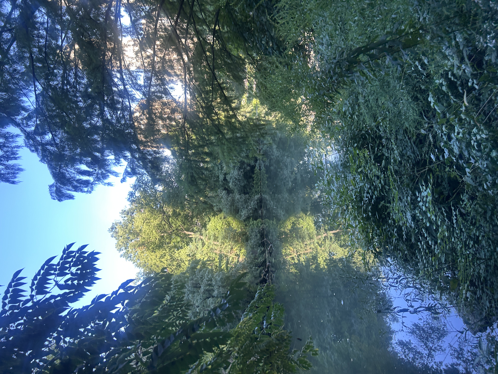
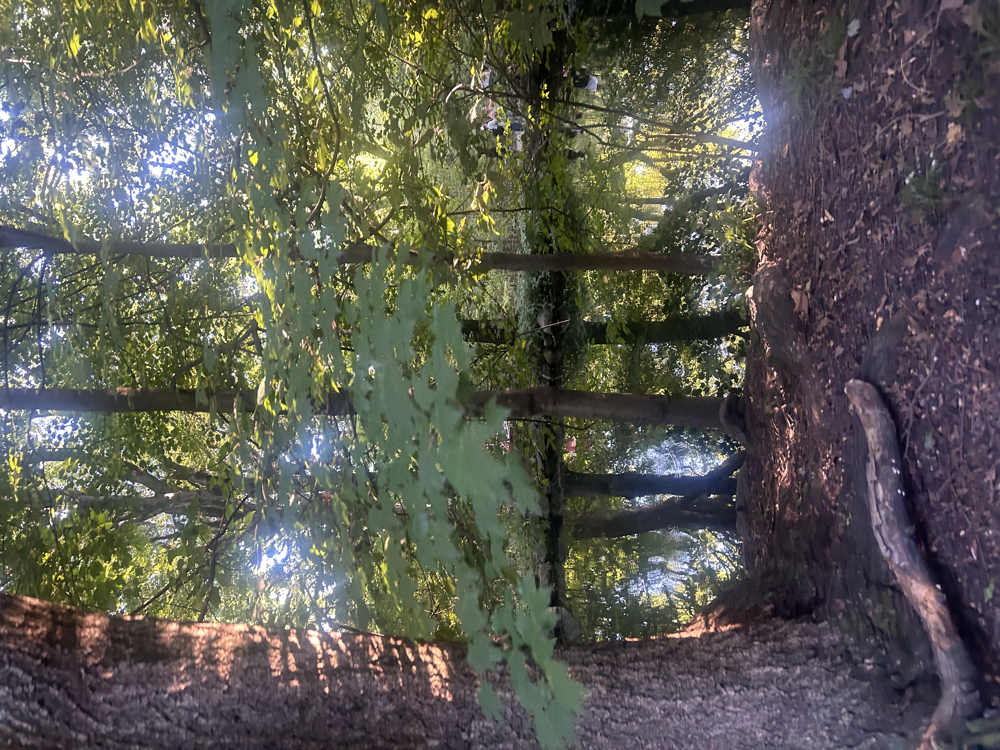

exploring central park

location: central park (the lake + azalea pond)
i spent most of my time wandeirng around the lake and all the hiking paths around. it's very easy to get lost among the trees but the water views are always worth it.

the lake
azalea pond